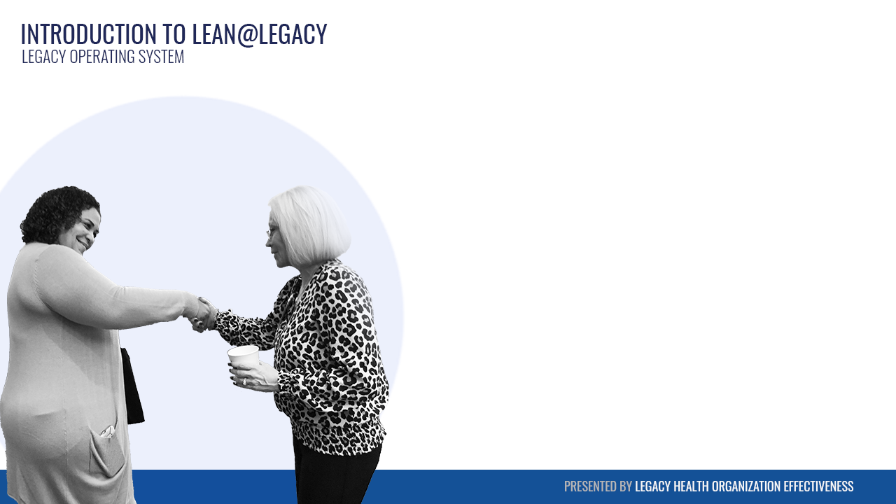
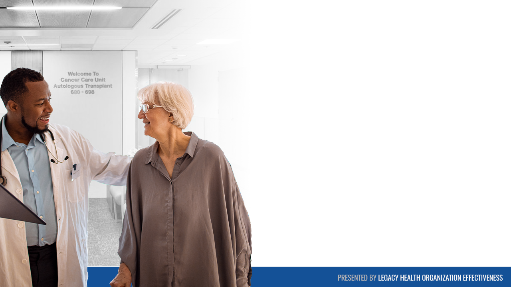
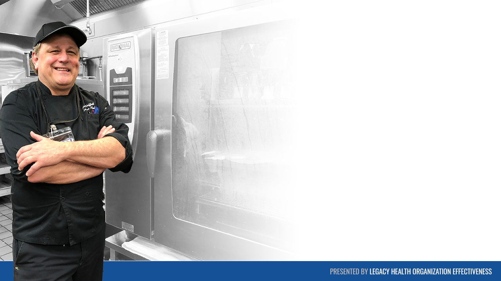
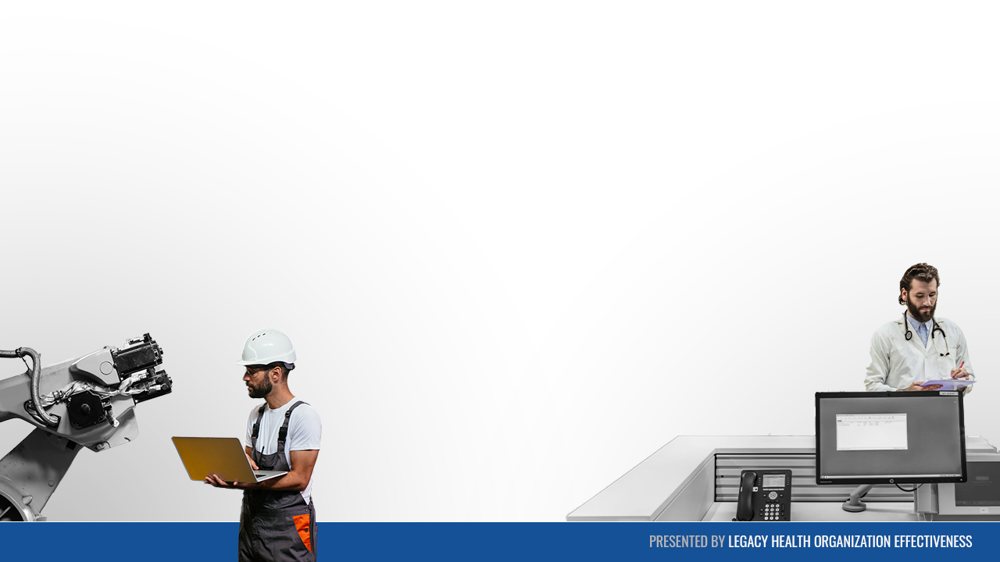
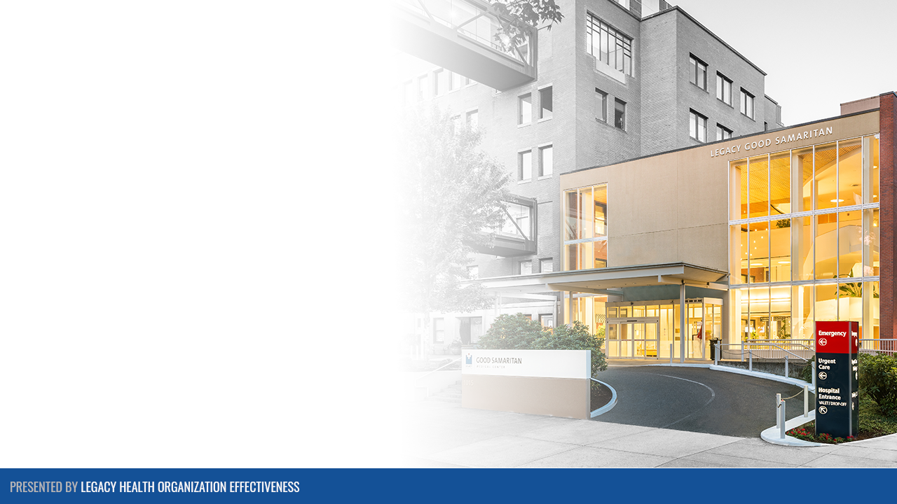
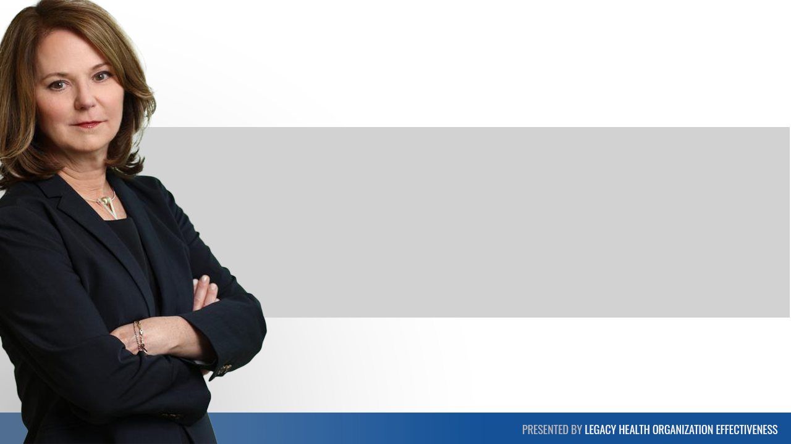
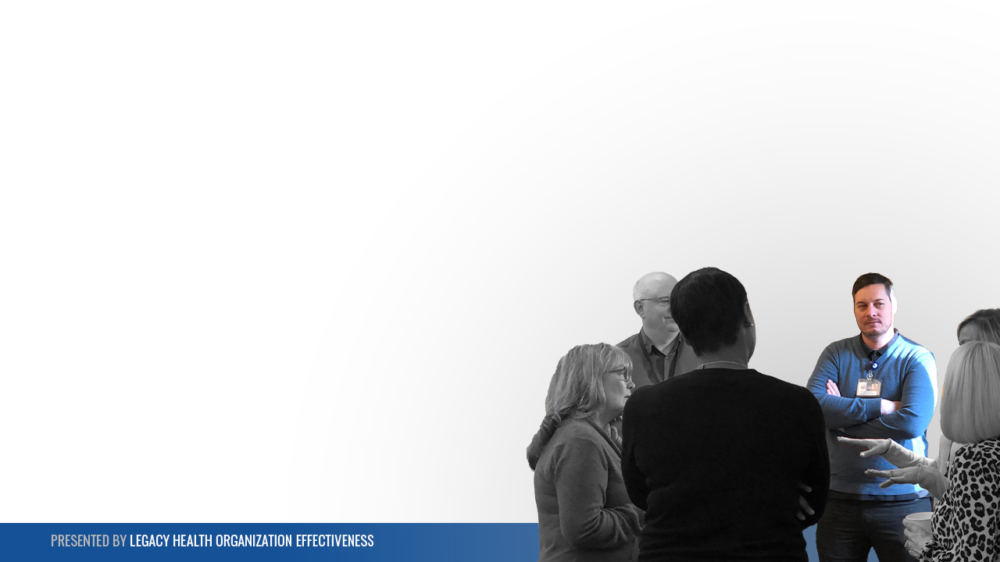
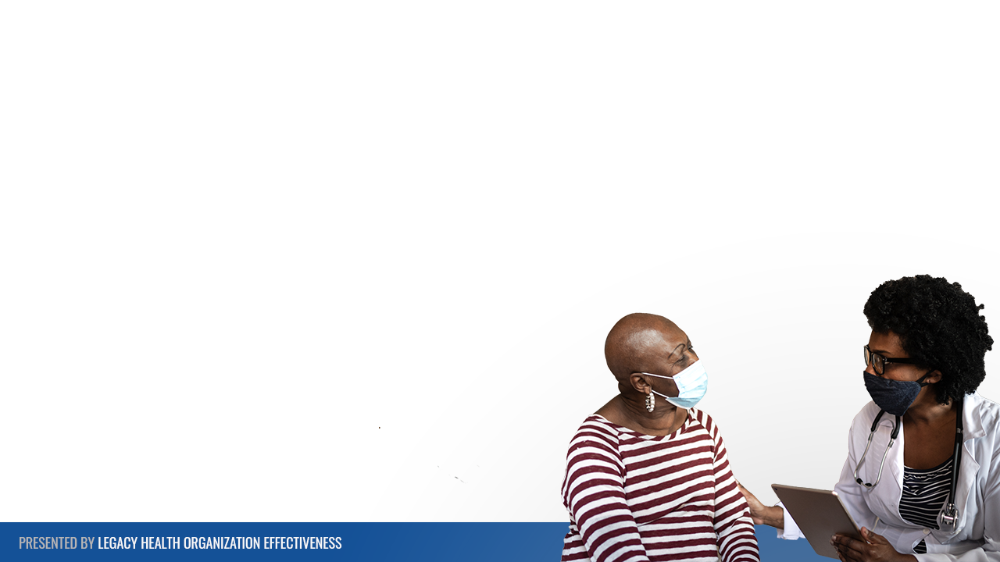
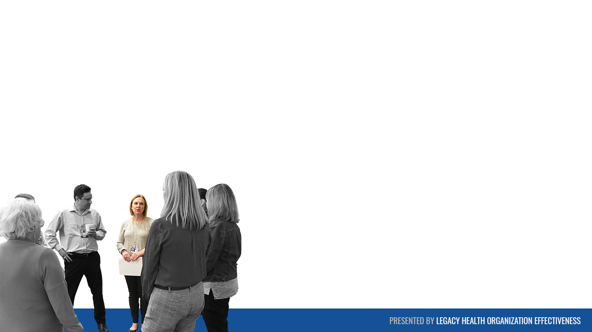
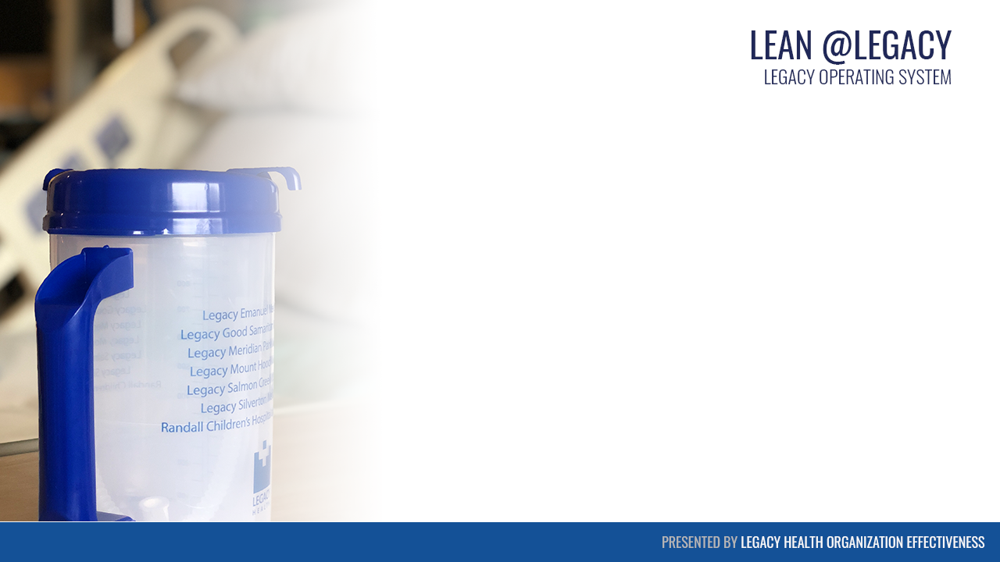

At Legacy Health, I designed a standardized presentation system that enabled educators, facilitators, and operational leaders to deliver consistent, high-quality learning experiences across a large regional healthcare organization.
Rather than creating individual slide decks for specific initiatives, I developed a flexible visual framework that could be adapted to a wide range of healthcare topics, including LEAN methodology, clinical education, operational improvement, and workforce development. The design system established consistent visual standards, improved clarity, reduced development time, and helped presenters focus on communicating complex information in ways that were accessible, engaging, and actionable for diverse audiences.
The examples below represent a selection of presentation templates and supporting visual assets developed to strengthen instructional consistency, improve knowledge transfer, and support scalable learning across Legacy Health.










Related Case Study
Healthcare Training Under COVID Constraints
A 12,000+ employee health system needed urgent digital-first training when classroom delivery was not possible.